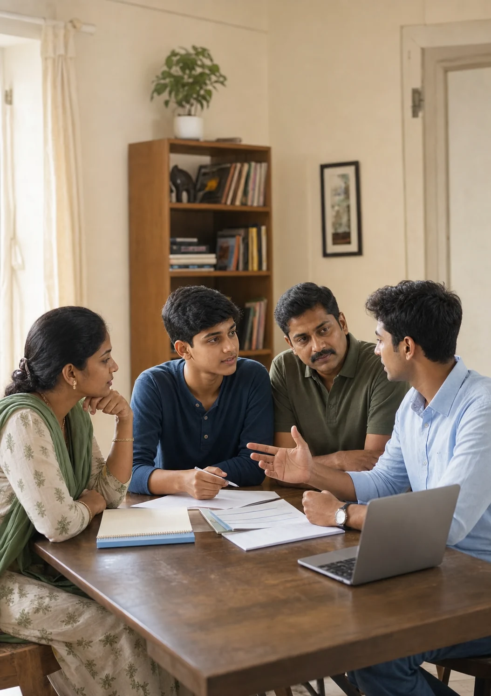

Discover
Career discovery
The proposed programme aims to help students explore careers beyond the few options they already know.
Intended outcomeAn education mentorship initiative
Safalta Setu is developing a mentorship programme for students in Classes 9 and 10, focused on career awareness, educational choices and the confidence to take the next step.
Programme details are currently being finalised.
Representative photograph. Not Safalta Setu participants.
Mentoring Today. Transforming Tomorrow.Guidance can change the direction of a life.
Who we are
Young people are often expected to make important educational decisions before they have had the space to understand their own interests.
Safalta Setu aims to bring students, families and mentors together so those decisions can feel informed, supported and hopeful.
Our programme
Safalta Setu is developing a mentorship programme for the formative years when curiosity, exposure and one trusted conversation can make a lasting difference.
Discover
The proposed programme aims to help students explore careers beyond the few options they already know.
Intended outcomeConnect
The proposed approach aims to create meaningful conversations with people who can listen, explain and encourage.
Proposed approachClarify
The intended outcome is to make subjects, streams and educational routes easier for students and families to understand.
Intended outcomeProgramme development
Programme details are being finalised. Confirmed eligibility, schedules and participation arrangements will be published after approval.
Why Indian Army families?
Army life can involve movement, transitions and changing environments. Safalta Setu aims to offer these students a consistent circle of guidance while they begin making important choices about education and work.

A safe space to ask questions
Exposure to wider possibilities
Conversations that include families
Practical next steps without pressure
Work underway
Current phase · Programme development
Safalta Setu is preparing to bring together interns, volunteers and prospective mentors across functions to develop a thoughtful mentorship programme for students from Indian Army families.
Our present work is focused on programme design, contributor coordination, clear communication and the safeguards needed before student delivery begins.
Programme design
Developing the structure, learning focus and proposed mentorship experience.
Contributor coordination
Preparing clear roles and coordination processes for people supporting the initiative.
Communication
Developing accurate information for students, families and future contributors.
Safeguarding preparation
Preparing appropriate youth-safety and responsibility processes before student delivery.
Get involved
Planned routes may allow people and organisations to offer time, experience, professional skills or institutional support after requirements are approved.
Future role information will cover responsibilities, screening and time commitment.
Requirements being finalised
Future opportunities will have defined work, supervision and learning expectations.
Details being prepared
Future partnership routes will explain the purpose, expectations and responsible contact process.
Partnership route being developed
Trust & transparency
Safalta Setu is registered as a Section 8 nonprofit company in India. Programme information will remain clearly distinguished from future plans as the initiative develops.
Organisation
RegisteredStudent protection & responsibility
In preparationProgramme transparency
Being developedOne conversation can open a new direction.